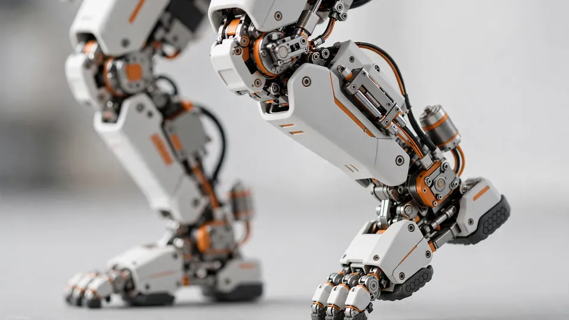

FF Nova goes on sale at $2,490: Faraday Future's 20-DoF humanoid opens invite-only orders — with a $299 Mini for classrooms
- Who: FF EAI Robotics Ecosystem Inc. (NASDAQ: FFR) and Faraday Future Intelligent Electric Inc. (NASDAQ: FFAI), at a joint new-product launch event.
- What: FF Nova, an entry-level embodied-AI humanoid robot; FF Nova Mini, a bipedal robot for Physical AI education; the Physical AI Spark Program curriculum; and the Nova Physical AI Reinforcement Learning Developer Program.
- When: announced October 16, 2026, with Phase One orders limited to a seven-day invitation application window.
- Prices: Nova device $2,490; Developer Skills Package $390; Nova Mini $299; Mini curriculum $499 (16 live small-group classes over two months); Phase One capped at 100 units, first 20 delivered immediately.
- Specs: 20 degrees of freedom; LiDAR, wide-angle vision, depth sensing, circular microphone array; bipedal walking plus detachable wheeled base; open SDK, ROS 2 workflow, over-the-air updates, Skills Store.
- The deal: FFR acquires FFAI's robotics assets and business in an all-stock transaction valuing FFAI's robotics business at ~$200M and FFR at ~$60M fully diluted; FFR issues shares at $2.246 (~50% premium to the Oct 12 $1.50 close); FFAI to hold ~65.7% of FFR with an 18-month lockup; FFR secured up to $10M in PIPE financing.
Five days after teasing an invite-only reveal, Faraday Future put a price on its first humanoid robot. The FF Nova — an entry-level embodied-AI machine with 20 degrees of freedom, LiDAR, and an open developer platform — goes on sale today at $2,490, with the first 20 of an initial 100-unit invitation batch shipping immediately. And for the classroom, a $299 Mini.
The joint launch event, held by FF EAI Robotics Ecosystem Inc. (NASDAQ: FFR) and Faraday Future Intelligent Electric Inc. (NASDAQ: FFAI), finally turns months of robotics teasers into something you can order — or at least apply to order. The companies describe Nova as a "Physical AI lab in a backpack": a development-grade humanoid aimed at developers, universities, and the education ecosystem rather than a consumer gadget. PR Newswire, Business Wire
What $2,490 buys
Nova is a true bipedal humanoid: 20 degrees of freedom across the body, able to walk on two feet, turn, wave, and get back on its feet after being knocked over. It has two movement modes — walking on two legs to interact with people, or riding on its detachable base for autonomous navigation.
The sensor stack is serious for the price class: LiDAR, wide-angle vision, depth sensing, and a circular microphone array. Nova connects to a large voice AI model for natural conversation and voiceprint recognition, and it supports AI Agent integration — the companies' pitch is that a cloud-based intelligent agent gets a physical body in the real world.
On the software side, FF is playing the developer-ecosystem game from day one: a fully open SDK, a ROS 2 development workflow, ongoing over-the-air updates, a full Sim2Real reinforcement learning pipeline, and a Skills Store where developers can share, reuse, and eventually monetize the capabilities they build.

The rollout is gated — and that's the point
Nova launches in three phases. Phase One is a limited, invitation-only release of 100 units for invited developers and educational institutions; applications run through the FF developer platform within a seven-day window, and the first 20 units are ready for immediate delivery. Pioneer Edition users get priority delivery, early SDK and documentation access, sample projects, official technical support, and co-creation opportunities with the ecosystem.
Phase Two opens to all developers and educational institutions — and FF expects that phase to show the first real-world development results and application examples. The full consumer launch comes in Phase Three.
The discipline here is notable: rather than mass-market a robot that isn't ready, FF is seeding a developer base and a Skills Store first. The reinforcement learning developer program, built on the NVIDIA Isaac platform, reinforces that — developers train policies in parallel in simulation, tune reward functions, apply domain randomization, then deploy and validate on physical Nova hardware.
The Mini: a $299 humanoid for the classroom
The FF Nova Mini is the more radical pricing statement. At $299, it's billed as America's first foundational Physical AI education platform built around a true bipedal humanoid — aimed at children and teens ages eight and up, for K–12 classrooms, after-school programs, and homes.
Weighing under a kilogram with an aluminum-alloy frame, the Mini walks on two legs, turns, stands up on its own, keeps dynamic balance, and can even do a forward roll. It supports visual block-based programming and hands-on teaching by demonstration, and it's demo-ready out of the box.
The accompanying curriculum costs $499 — a step-by-step Physical AI learning path from voice commands and block programming to AI and motion control concepts, with lesson plans, experiment manuals, classroom kits, and teacher training. The bundled foundations course adds 16 live small-group classes over two months, and purchasers get an exclusive cash voucher toward the $299 Mini device. Morningstar
The money behind the machines
The launch wasn't just hardware. FFR and FFAI signed definitive agreements on October 12 for FFR to acquire FFAI's robotics assets and business in an all-stock transaction — valuing FFAI's robotics business at approximately $200 million and FFR at about $60 million on a fully diluted basis. FFR will issue shares to FFAI at $2.246 apiece, a ~50% premium to FFR's $1.50 closing price on the signing date.
On an as-converted, fully diluted basis, FFAI will hold about 65.7% of FFR once the deal closes, with all newly issued shares under an 18-month lockup — and management, employees, and PIPE investors will collectively hold ~89.3%, leaving a freely tradable public float of roughly 13 million shares (~10.7%). FFR also secured up to $10 million in its first PIPE financing round, priced at market with no discount or warrants.
The goal, stated plainly in the announcement: make FFR the first U.S.-listed pure-play "Four-Core Full-Stack AI" humanoid and bionic robotics ecosystem company, with FFR targeting a top-three EAI robotics industry ranking over the next five years. Alongside the hardware, the companies launched the FF EAI Education Skills product and the "Physical AI Spark Program" curriculum, opened limited invitation-only developer community recruitment, and put the full robotics lineup on sale online (FF.com, FF Mall, the official Amazon store) and through offline channels — kicking off what they're calling the FF Education Season.
The event also drew more than 50 scholars and professors to an engineering and frontier-technology symposium at FFAI headquarters, co-hosted with the American Institute of Aeronautics and Astronautics — a sign FF wants academic credibility, not just a consumer splash.
Frequently asked questions
How much does the FF Nova cost?
The Nova robot device is priced at $2,490, with the Developer Skills Package at $390. The Nova Mini is $299, and the accompanying Physical AI curriculum is $499 — including 16 live small-group classes over two months plus a cash voucher toward the Mini device.
What can the FF Nova actually do?
Nova is a true bipedal humanoid with 20 degrees of freedom: it can walk, turn, wave, and get back on its feet after being knocked over, or ride on a detachable wheeled base for autonomous navigation. It carries LiDAR, wide-angle vision, depth sensing, and a circular microphone array, connects to a large voice AI model for natural conversation and voiceprint recognition, and supports AI Agent integration — with a fully open SDK, ROS 2 workflow, over-the-air updates, and a Skills Store.
When can you get one?
In three phases. Phase One is a limited, invitation-only release of 100 units for invited developers and educational institutions — applications run through the FF developer platform within a seven-day window, and the first 20 units are ready for immediate delivery. Phase Two opens to all developers and educational institutions, followed by a full consumer launch in Phase Three.